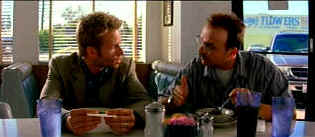

| Memento (SE)/ A, A |
| Columbia/2000/113/ANA 2.35 |
Memento is a brilliant enigma twisted with
devious delight. That first scene with everything moving backwards is a
beautifully etched road map to guide you through the internecine film. While at times
confusing, it's always a riveting and stimulating experience. Memento
sparks conversation. There aren’t too many of those these days.
Leonard Shelby is suffering from acute
short-term memory loss supposedly set off by the violent rape and murder
of his wife. Shelby, a former insurance investigator, is determined to
find and kill the perpetrators. He's got to work around his memory
handicap, but with methodical and meticulous determination, Leonard
etches a path of clues that lead him on his road.
 |
| Teddy stirs things up. ©Columbia |
Memento is
brilliant filmmaking that works on multiple levels. The fantastic script
by writer/director Christopher Nolan is adapted from a story by his
brother Jonathan Nolan. The director is an intelligent writer. Wonderful
dialogue makes the characters inhabit this world he created. You feel
like you are inside their skins. Character history develops naturally. Memento
is smart, savvy, honest and true to itself. The rich tapestry is woven
with an artist's care and love of the material. Such highly original
work must be admired. Imagine the mental discipline it took to
convincing lay out the time lines and thoroughly vet them. Don't even
struggle to find mistakes. There are generous clues provided throughout
the dialogue. Nolan never lets you few cheated in any way. He even
manages to inject natural humor into the script without calling
attention to itself.
Nolan's direction is brilliant, his
script a gem. Memento is nothing short of a mesmerizing. It's
even better the second time around. This is a film which grows in
stature with familiarity. Nolan is a one-armed juggler in Memento,
throwing all those plot lines in the air and controlling them with
seeming nonchalance. There are three stories moving in the air with a
magic script and editing wand making them dance to Nolan's will.
Continuity is a challenge met with perfection; yet, no matter how hard
you concentrate there’s a vague feeling that something is amiss. Even
the visual look is wonderful using black and white and color to help
define the movement of the story. Any
visual flourishes mate perfectly with the material. It's simple, elegant
and never too cute. Nolan rules!
Guy
Pearce is an amazing Leonard Shelby. What a concentrated, layered
performance. You have to get behind the eyes of Shelby, and Peace
provides the window. Pearce once again disappears into a role. Is this
really the same guy (sic) that sashayed through The Adventures of
Priscilla, Queen of the Desert and coldly worked his way through L.A.
Confidential? Pearce has displayed a
remarkable range Crazed in
Ravenous, clean-cut in L.A.
Confidential, grubby in Memento Pearce
proves a major league talent again and again. He
acts with his entire being. His body movement, the details of his
performances, everything rings true.
Christopher Nolan does a wonderful job with all the
actors. Pearce's center-piece performance is complimented by a seedy Joe
Pantoliano as Teddy and Carrie-Ann-Moss is crafts her Natalie with a
hidden nasty edge. Ubiquitous supporting actor Stephen Tobolowsky gives
Sammy Jankis a hollow sadness while Harriet Sansom Harris finds honest
desperation as Mrs. Jankis.
The mysteries of Memento are delicious.
The film demands deep concentration to prevent getting lost. Like
Leonard Shelby, you must hang onto every thread and detail lest they
become overshadowed by the film's movement. I don't suggest going so far
as to tattoo vital script information on your body however.
Memento,
delivered as a cleverly packaged 2-DVD special edition, gets first class
treatment from Columbia. The transfer is reference DVD material. Truly
intense, beautiful, color saturation enhance the experience of watching
the film. The contrast between color and black and white is even
stronger on this new special edition transfer. Details are delivered
with maximum resolve. Penetrating depth to the image. And there's
no visible edginess. This is a very rich looking transfer with deep,
lush, black levels. Excellent detail in the shadowy sequences makes for
comfortable viewing. The DVD consistently delivers maximum light output
and terrific contrast range. Lighting is replicated with an abundance of
style. Look at the beautiful glow on the lamp shades in the interiors.
They cast a glow on the characters. Natural looking flesh tones.
Excellent facial detail in various lighting. The black and white
sequences are absolutely stunning with superb gray scale. You can watch Memento
accompanied by Dolby Digital 5:1, DTS Surround, or Dolby 2-channel
surround. Whichever you choose, you will find a three-dimensional sound
experience. Very finely encoded.
Writer/Director Christopher Nolan's confidential,
whispered commentary on disc one examines technical and thematic details
with scene specific commentary. Some of the audio commentary sounds like
it was encoded in reverse. Go ahead, decipher that. The special edition
is very worked. Disc 2 includes an Anatomy of a Scene made for
the Sundance Channel. You can also view the annotated director's
shooting script while listening to the film. Buried under the
challenging menu system is chronological version of the film. You can
also hunt down the original short story. There's more buried treasure if
you care to travel into the home theater with a shovel.

Selections from the Feature
Archive include articles on Akira Kurosawa, Frank Darabont, Blonde Bimbos, Hollywood Street Gangs, or Vietnam: The Hollywood Pariah, and many
more....
Film noir: The phrase hangs awkwardly on the tongue, shadowy images peek out from behind half-closed doors. Click on the Noir and Noir Again symbol for a look into the dark spaces of Hollywood's revisiting of film noir.

L.A. Confidential (SE) /A,A

Unquestionably the best picture of 1997. Top-notch
entertainment with superb acting.

The Movie Poster Archive includes extensive poster images from the films of stars like Susan Hayward, Kirk Douglas, Katharine Hepburn and many more. Our featured star is Richard Widmark.


ISF Monitor
Calibrations in the Tristate New York area. Lots of hardware
info and frequent hardware peaks from video expert Kevin Miller. They
may be judgmental, but that's the point, isn't it. Lots of DVD reviews
plus news and more.
 ETEKNet
is the web's only 24-hour, totally FREE source for all your home
theater, DVD, Dreamcast, PC, and Networking tech support needs!
ETEKNet
is the web's only 24-hour, totally FREE source for all your home
theater, DVD, Dreamcast, PC, and Networking tech support needs!

The National Film Preservation Foundation (NFPF) is the
nonprofit organization created by the U.S. Congress to save America's
film heritage.

DVD links, information about Web specials, news, Site
reviews.
 The Cinematheque is a
cultural, arts organization that programs year-round specialty film
series at the newly renovated, landmark 1922 Egyptian Theatre on
Hollywood Boulevard!
The Cinematheque is a
cultural, arts organization that programs year-round specialty film
series at the newly renovated, landmark 1922 Egyptian Theatre on
Hollywood Boulevard!